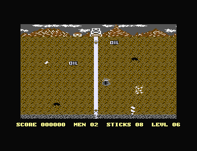

<meta charset="utf-8">
<meta name="viewport" content="width=device-width, initial-scale=1">
<title>Prospector Pete: discoveries</title>
<link rel="preconnect" href="https://fonts.googleapis.com">
<link rel="stylesheet" href="https://fonts.googleapis.com/css2?family=Lato:wght@400;700;900&family=IBM+Plex+Mono:wght@400;500&display=swap">
<style>
:root{
  --bg:#23262d; --paper:#e9e7e1; --surface:#ffffff; --surface-2:#f1efea; --line:#d5d3cc; --line-soft:#e0ded8;
  --ink:#2f3136; --ink-soft:#55585f; --ink-mute:#80838a;
  --link:#1f5fa8; --link-hover:#154480; --accent:#1f5fa8;
  --amber:#c25a00; --cyan:#1f5fa8; --coral:#d04a3a; --green:#2a8a4a; --violet:#4a5bd6; --hl:#fff0c2;
  --chip:#2f3136; --chip-ink:#ffffff;
  --c64blue:#40318d; --c64grey:#686868;
  --fd:'Lato',system-ui,sans-serif; --fb:'Lato',system-ui,sans-serif; --fm:'IBM Plex Mono',ui-monospace,Menlo,monospace;
  --col:1080px; --gx:68px; --fs:17px; --lh:1.6; --hw:900; --h1:46px; --h2:26px; --sy:48px; --pp:26px; --r:10px;
  --plate-shadow:0 1px 2px rgba(0,0,0,.05),0 4px 14px rgba(0,0,0,.05);
}
*{box-sizing:border-box}
html{background:var(--bg);min-height:100%}
body{background:var(--paper);color:var(--ink);font-family:var(--fb);font-size:var(--fs);line-height:var(--lh);max-width:var(--col);margin:0 auto;min-height:100vh;padding:0 0 4rem}
h1,h2,h3{font-weight:var(--hw);letter-spacing:-.01em;text-wrap:balance;color:var(--ink);margin:0}
.wrap{padding:0 var(--gx)}
.hero{padding:48px var(--gx) 8px;text-align:left}
.eyebrow{font-family:var(--fm);font-size:12px;letter-spacing:.08em;text-transform:uppercase;color:var(--ink-mute);margin:0 0 10px}
.hero h1{font-size:var(--h1);line-height:1.15;letter-spacing:-.02em;margin:0 0 14px}
.hero .sub{margin:0 0 .6em;color:var(--ink-soft)}
section{padding:var(--sy) 0 24px}
section:last-of-type{border-bottom:none}
.fig{font-family:var(--fm);font-size:12px;letter-spacing:.08em;text-transform:uppercase;color:var(--ink-mute);margin:0 0 10px}
h2.t{font-size:var(--h2);margin-bottom:12px}
.lede{color:var(--ink-soft);margin:0 0 30px}
.plate{background:var(--surface);border:1px solid var(--line);border-radius:var(--r);padding:var(--pp);box-shadow:var(--plate-shadow)}
.cap{font-size:14px;color:var(--ink-mute);margin-top:14px;line-height:1.55}
.cap b{color:var(--ink);font-weight:700}
code{font-family:var(--fm);font-size:.82em;background:var(--chip);color:var(--chip-ink);border-radius:4px;padding:2px 6px;white-space:nowrap}

.pp-pair{display:grid;grid-template-columns:1fr 1fr;gap:18px;align-items:start}
.pp-pair img{width:100%;display:block;border-radius:4px;image-rendering:pixelated;background:#000}
.pp-bar{display:flex;flex-wrap:wrap;gap:8px;align-items:center;margin:0 0 12px;font-size:14px}
.pp-bar>div{margin:0;min-width:150px}
.pp-bar button,.pp-pad button{font:inherit;font-size:13px;padding:5px 11px;border:1px solid var(--line);background:var(--surface-2);color:var(--ink);border-radius:6px;cursor:pointer;touch-action:manipulation;user-select:none}
.pp-bar button:hover,.pp-pad button:hover{border-color:var(--ink-mute)}
.pp-bar button.on,.pp-pad button.on{background:var(--ink);color:#fff;border-color:var(--ink)}
.pp-bar label{display:flex;gap:6px;align-items:center;color:var(--ink-soft)}
.pp-map{width:100%;display:block;image-rendering:pixelated;background:#000;border-radius:4px}
.pp-map:focus{outline:2px solid var(--accent);outline-offset:2px}
.pp-pad{display:flex;flex-wrap:wrap;gap:6px;align-items:center;margin:12px 0 0}
.pp-pad button{min-width:42px;font-size:15px}
.pp-state{font-family:var(--fm);font-size:13px;color:var(--ink-soft);margin:10px 0 0;min-height:1.5em}
.pp-note{font-size:14px;color:var(--amber);margin:6px 0 0;min-height:1.4em}
.pp-frame{width:100%;max-width:640px;display:block;image-rendering:pixelated;background:#000;margin:0 auto}
.pp-wrapf{position:relative;max-width:640px;margin:0 auto}
.pp-band{position:absolute;left:0;right:0;border-top:2px dashed #ffd23f;pointer-events:none}
.pp-band span{position:absolute;right:4px;top:2px;font-family:var(--fm);font-size:11px;color:#ffd23f;background:rgba(0,0,0,.6);padding:0 4px;border-radius:3px}
.pp-small{display:flex;flex-wrap:wrap;gap:22px;align-items:flex-start}
.pp-small canvas{image-rendering:pixelated;background:#000;border-radius:4px;display:block}
.pp-ring{display:grid;grid-template-columns:repeat(3,64px);grid-template-rows:repeat(3,64px);gap:0;cursor:pointer}
.pp-verdict{font-family:var(--fm);font-size:15px;background:#1b1b1b;color:#c8c870;padding:10px 14px;border-radius:6px;margin:10px 0 0;min-height:2.6em}
.pp-table{border-collapse:collapse;font-size:14px;margin:10px 0;width:100%}
.pp-table th,.pp-table td{border-bottom:1px solid var(--line-soft);padding:4px 7px;text-align:right;vertical-align:top}
.pp-table th:first-child,.pp-table td:first-child{text-align:left}
.pp-table th{font-weight:700;color:var(--ink-soft);font-size:13px}
.pp-table tr.now td{background:var(--hl)}
.pp-scroll{overflow-x:auto}
.pp-legend{display:flex;flex-wrap:wrap;gap:14px;font-size:13px;color:var(--ink-soft);margin:10px 0 0}
.pp-legend i{display:inline-block;width:12px;height:12px;border-radius:2px;margin-right:6px;vertical-align:-1px}
.pp-goods{display:flex;flex-wrap:wrap;gap:14px;margin:4px 0 0}
.pp-good{text-align:center;font-size:12.5px;color:var(--ink-soft);width:74px}
.pp-good canvas{display:block;margin:0 auto 4px;image-rendering:pixelated;background:#000;border-radius:3px}
.pp-good b{display:block;color:var(--ink);font-size:14px}
.pp-need{font-size:14px;color:var(--coral)}
@media (max-width:720px){:root{--gx:18px;--h1:36px;--pp:16px}.pp-pair{grid-template-columns:1fr}}
.pp-code{font-family:var(--fm);font-size:13px;line-height:1.5;background:#1b1b1b;color:#e6e6e6;padding:12px 14px;border-radius:6px;overflow-x:auto;margin:0;white-space:pre}
.pp-list{margin:0;padding-left:20px}.pp-list li{margin:0 0 10px}.pp-list li:last-child{margin:0}
</style>
<!-- tabs -->
<header class="hero">
  <p class="eyebrow">1986 · Mastertronic</p>
  <h1>Prospector Pete</h1>
  <p class="sub">What the code does that the game never tells the player. A stick laid in the right cell on level 6 boxes the first creature in, and the game stops for good.</p>
</header>
<main class="wrap">

<section id="freeze">
  <p class="fig">01 · Bug</p>
  <h2 class="t">Bug: a creature with nowhere to go freezes the game</h2>
  <p class="lede">When every way round a creature is shut, it looks for a way out for ever, inside the interrupt, and the game never moves on.</p>
  <div class="plate">
    <div class="pp-pair">
      
      <div>
        <canvas id="pp-box" width="240" height="240" style="width:240px;height:240px;cursor:pointer" aria-label="A creature and the four cells round it. Click a cell to open or shut it."></canvas>
        <div class="pp-bar" style="margin:10px 0 0"><button id="pp-boxrun">Run it again</button></div>
        <p class="pp-state" id="pp-boxstate"></p>
      </div>
    </div>
    <p class="cap">Left, level 6 in plus4emu after the recipe below: the water has filled the shaft and covers Pete, who does not drown, and nothing else moves. Right, the game's <code>move_creatures</code> (<code>$2778</code>) on the kit's 6502, for a creature at the bottom of the shaft at the end of a cell. Click a cell round it to open or shut it. With all four shut, the run is stopped after 100,000 instructions, still in the loop.</p>
  </div>
  <p>At the end of each cell a creature that does not chase Pete looks for an open way, starting from a random one (<code>move_creatures</code>). The loop at <code>$281E</code>-<code>$2827</code> masks the way's number to 0 to 3, looks at that way, and if it is shut adds one and goes round again. The <code>BNE</code> at <code>$2827</code> tests the number after the add and before the mask, 1 to 4, which is never zero, so it always branches. While any way is open the loop finds it. With all four shut it goes round for ever.</p>
  <p><code>move_creatures</code> runs inside <code>irq_play</code>, in the raster interrupt at line <code>$AC</code>. Stuck there, the interrupt never returns to the main loop, so <code>main_loop</code> never runs again: goodies are not collected, sticks do not go off, Pete cannot die, and ESC does nothing. The interrupt's other raster lines still fire, because <code>irq_play</code> lets interrupts in again as soon as it starts (<code>CLI</code> at <code>$1997</code>): the screen is still drawn, Pete still walks, and the water still rises. Only a reset ends it.</p>
  <p>A player can reach it. On level 6, walk straight down the shaft from the start, lay a stick in row 20, the cell above the big charge, and climb away. The stick goes off a few frames after the big charge, and its debris forms at frame 291 of the level, just after the flood has begun below it at 285. The first creature comes out of the bottom of the shaft at frame 300, two frames before the water rises through the debris, with debris above it, the broken floor below, and earth on either side. Live, the main loop then ran no pass in 500 frames, while the interrupt ran 2,000 times. On levels 1, 5, and 14 the same play missed: the creature came out with the bottom cell still exploding, or with the water already through.</p>
</section>

<section id="chase">
  <p class="fig">02 · Bug</p>
  <h2 class="t">Bug: a creature chasing up or down nearly always goes up</h2>
  <p class="lede">The distance up or down to Pete is worked out from the creature's column, where its row was meant.</p>
  <div class="plate">
<pre class="pp-code">$27A3  A5 07     LDA $07      ; Pete's row, 4 to 21
$27A5  38        SEC
$27A6  F5 8A     SBC $8A,X    ; the creature's column; its row is at $8E,X
$27A8  85 98     STA $98      ; the distance up or down, for chase_updown</pre>
    <p class="cap">From <code>move_creatures</code>. Three lines before, the distance across is Pete's column less <code>$8A,X</code>, the same operand, which is right for that one.</p>
  </div>
  <p>When a creature chases, it tries across or up and down first, at random, and for up and down it follows the sign of the difference at <code>$98</code>: down when it is positive, up when negative (<code>chase_updown</code>). That difference is Pete's row less the creature's column. Pete's row is 4 to 21 and the creature's column 1 to 88, so whenever the creature is right of column 21 the difference is negative and it goes up, wherever Pete is. Creatures come out at the bottom of the shaft, in column 44, below Pete, so going up is usually right, and the slip seldom shows. A creature above Pete and right of column 21 that chases up or down climbs away from him.</p>
  <p>The <a href="index.html#creatures">map on the How it works tab</a> shows it for any place: with the game's reading, a creature right of column 21 never heads down, wherever Pete is; with the row read instead, it heads down towards every place below it.</p>
</section>

<section id="lattice">
  <p class="fig">03 · Bug</p>
  <h2 class="t">Bug: creatures stop chasing in a lattice of places</h2>
  <p class="lede">A creature wanders whenever the two distances to Pete, ANDed together, come to zero: often, and in a pattern.</p>
  <div class="plate">
<pre class="pp-code">$27E0  A5 98     LDA $98      ; the distance up or down
$27E2  25 97     AND $97      ; ANDed with the distance across
$27E4  F0 2B     BEQ $2811    ; zero: wander</pre>
    <p class="cap">From <code>move_creatures</code>.</p>
  </div>
  <p>The test is meant to catch a creature level with Pete, where a distance is 0 and there is nothing to chase. ANDing the two distances does that, and also sends the creature wandering whenever the two numbers have no bit set in common, such as 8 and 6, or 12 and 3. On the How it works tab's <a href="index.html#creatures">map</a> these places are the grey lattice to the right of the creature; to its left the distance across is negative, its high bits all set, and nearly every AND is non-zero. Together with the column slip above, a creature left of Pete wanders far more often than one right of him.</p>
</section>

<section id="debris">
  <p class="fig">04 · Secret</p>
  <h2 class="t">Secret: debris walls the creatures out</h2>
  <p class="lede">The debris a stick leaves stops a creature, though Pete walks through it.</p>
  <div class="plate">
<pre class="pp-code">$27C7  B1 84     LDA ($84),Y  ; the cell on that side
$27C9  C9 5C     CMP #$5C
$27CB  90 0E     BCC $27DB    ; below $5C kept as it is: only 0, tunnel, is open
$27CD  C9 6D     CMP #$6D
$27CF  90 08     BCC $27D9    ; water, $5C-$6C: open
$27D1  C9 6F     CMP #$6F
$27D3  F0 04     BEQ $27D9    ; a stick: open
$27D5  C9 A2     CMP #$A2
$27D7  D0 02     BNE $27DB    ; an explosion open, anything else shut, debris ($A3) too</pre>
    <p class="cap">From <code>move_creatures</code>: a way is open when the cell holds 0 (tunnel), water, a stick or an explosion, and shut otherwise, debris included. <code>can_enter</code> lets Pete into debris and clears it (<code>$21AA</code>).</p>
  </div>
  <p>A stick laid across a tunnel leaves a wall that only Pete can pass. Live, on level 1, with debris poked into the shaft at row 15 before the first creature came out, the creature climbed to row 16, turned back, and went on only after the water had risen through the debris at frame 445. Without the debris the same creature reached Pete at the top of the shaft by frame 613. The water flows into debris as into tunnel, so the wall lasts until the flood reaches it.</p>
</section>

<section id="drowned">
  <p class="fig">05 · Secret</p>
  <h2 class="t">Secret: water puts out a burning stick</h2>
  <p class="lede">A stick the flood covers never goes off.</p>
  <div class="plate">
<pre class="pp-code">$2BA8  DE 02 07  DEC $0702,X  ; one frame less on this stick
$2BAB  F0 0A     BEQ $2BB7    ; run out
...
$2BB7  B1 0D     LDA ($0D),Y  ; what is in its cell now
$2BB9  C9 6F     CMP #$6F     ; still a stick: explode
$2BBB  F0 22     BEQ $2BDF
$2BBD  C9 A2     CMP #$A2     ; an explosion: leave debris
...                           ; anything else, water: off the list</pre>
    <p class="cap">From <code>dynamite</code>.</p>
  </div>
  <p>When a stick's count runs out, <code>dynamite</code> looks at its cell again. A stick goes off and an explosion turns to debris, but a cell the water has filled in the meantime is simply taken off the list. Live, a stick put in the shaft at row 20 with 255 frames of fuse was covered by the water at frame 345 of level 1 and left the list without exploding when its fuse ran out at frame 455; the same stick with 100 frames exploded at frame 300. In the <a href="index.html#mine">mine on the How it works tab</a>, a stick laid low in the shaft just before the flood goes out the same way.</p>
</section>

<section id="zeropage">
  <p class="fig">06 · Quirk</p>
  <h2 class="t">The room check for the bottom row reads the zero page</h2>
  <p class="lede">Where a goodie goes in the deepest row depends on the game's own variables.</p>
  <div class="plate">
<pre class="pp-code">$2DA7  B1 11     LDA ($11),Y  ; a cell of the 4 by 4 block round the place
$2DA9  C9 70     CMP #$70     ; a goodie there?
$2DAB  B0 94     BCS $2D41    ; then try another place</pre>
    <p class="cap">From <code>find_space</code>. The block starts one row above and one column left of the place and runs four rows down.</p>
  </div>
  <p>Before placing a goodie, <code>find_space</code> checks the four-by-four block round the place it has picked for any byte of <code>$70</code> or more, so that goodies never touch. For a one-cell or two-wide goodie in row 21, the lowest it can go, the block's last row is row 23, below the map. The map ends at <code>$3FFF</code>, and on the C16, whose 16 KB of RAM repeats through the 64 KB, the address after it is the zero page again. Row 23 is the game's variables from <code>$00</code> to <code>$5A</code>, and where one of them holds <code>$70</code> or more, a goodie in the row above is refused and placed again elsewhere.</p>
  <p>A player could never tell. It shows when the level builder runs on 64 KB of plain memory, as this site's pages run it: from the same timer readings it made a different mine for level 16 than the game did in plus4emu, and the same mine once the zero page was copied to <code>$4000</code>. On a Plus/4, with 64 KB of real RAM, the same tape would read whatever lies at <code>$4000</code> instead (inferred from the memory map).</p>
</section>

<section id="small">
  <p class="fig">07 · Quirks</p>
  <h2 class="t">Smaller oddities in the code</h2>
  <p class="lede">Slips that change nothing a player sees.</p>
  <div class="plate">
    <ul class="pp-list">
      <li><b>The view asks to scroll right at its right end, every frame.</b> <code>scroll_view</code> stops a move at the left end of the map by comparing with the first column, but at the right end it compares the view's edge with <code>$77</code>, column 119, which it never reaches. With Pete near the right end the move is asked for on every call and stopped at the start of the next, with nothing to see. Live: with Pete at column 88, <code>$08</code> read 1 after every frame and the view did not move.</li>
      <li><b>The jingle at the end of a level reads TED where it seems meant to write.</b> At <code>$18BB</code> it loads 3 and then loads <code>$FF10</code> over it, so voice 2's high pitch bits keep whatever they held. The lines round it all store to TED, so a <code>STA</code> was probably meant (inferred from the code).</li>
      <li><b>The large goodies' list sits on the KERNAL's vectors.</b> <code>place_goodies</code> keeps the addresses of up to ten large goodies at <code>$0316</code>, over the vectors for BRK and OPEN to GETIN. The game never calls the KERNAL, so nothing reads them.</li>
      <li><b>The kill bonus is paid once for each pass of the creatures.</b> <code>kill_bonus</code> adds 150 points however many creatures one explosion kills in the same pass.</li>
      <li><b>Level 6 burns faster than level 7.</b> <code>level_fuse</code> runs 120, 110, 110, 105, 100, then 90 on level 6 and 95 on level 7.</li>
    </ul>
  </div>
</section>

</main>

<footer style="margin:16px 0 0;padding:22px var(--gx) 0;border-top:1px solid #e0ded8;font-family:'IBM Plex Mono',ui-monospace,Menlo,monospace;font-size:12px;color:#80838a"><a href="https://github.com/gamesexplained/gamesexplained" style="color:#1f5fa8;text-decoration:none">GitHub</a> · <a href="https://discord.gg/3V9GWyRDWV" style="color:#1f5fa8;text-decoration:none">Discord</a><br>© Games Explained contributors. Write-ups, facts and symbol maps are available under <a href="https://creativecommons.org/licenses/by-sa/4.0/" style="color:#1f5fa8;text-decoration:none">CC BY-SA 4.0</a>; code under <a href="https://opensource.org/licenses/MIT" style="color:#1f5fa8;text-decoration:none">MIT</a></footer>
<script src="../../lib/c16.js"></script>
<script src="../../lib/cpu6502.js"></script>
<script src="reference/pete.js"></script>
<script>
(function () {
  const $ = id => document.getElementById(id);
  if (!window.C16 || !window.C64Cpu || !window.Pete) {
    const p = document.createElement('p'); p.className = 'pp-need';
    p.textContent = 'This needs the site\'s scripts (lib/c16.js, lib/cpu6502.js): open the page from the built site.';
    $('pp-box').replaceWith(p);
    return;
  }

  /* The freeze: move_creatures for a creature boxed in at the bottom of the shaft */
  C16.load('listing.json').then(L => {
    const m = Pete.fresh(L);
    Pete.startLevel(m, 5);
    const cv = $('pp-box'), out = $('pp-boxstate');
    const C = 44, R = 21;                                      // the bottom of the shaft, where the big charge lies
    const WAYS = ['', 'up', 'down', 'left', 'right'];
    // the four cells round it, as the recipe leaves them: debris above, the broken floor ($39) below, earth either side
    const side = { 1: [C, R - 1], 2: [C, R + 1], 3: [C - 1, R], 4: [C + 1, R] };
    const shut = { 1: 0xA3, 2: 0x39, 3: m[Pete.at(C - 1, R)], 4: m[Pete.at(C + 1, R)] };
    const open = new Set();
    let last = '';
    // creature 0 at the end of its cell ($28 = 3), moving up, in the cell ($30) at the bottom of the
    // shaft; Pete at the top of it, straight above, so that the two distances AND to 0 and it wanders
    function setUp(t) {
      for (let r = R - 1; r <= R + 1; r++) for (let c = C - 1; c <= C + 1; c++) t[Pete.at(c, r)] = m[Pete.at(c, r)];
      t[Pete.at(C, R)] = 0;
      for (const w in side) t[Pete.at(...side[w])] = open.has(+w) ? 0 : shut[w];
      for (let n = 0; n < 5; n++) t[0x22 + n] = 0;
      const a = Pete.at(C, R);
      t[0x23] = 1; t[0x28] = 3; t[0x4B] = 1; t[0x8A] = C; t[0x8E] = R;
      t[0x30] = t[0x32] = a & 255; t[0x31] = t[0x33] = a >> 8;
      t[0x06] = C; t[0x07] = 4;
      return t;
    }
    function draw() {
      const t = setUp(m.slice());
      t[0x28] = 0;
      Pete.withFigures(t, () => Pete.grid(cv, t, 3, 3, (x, y) => t[Pete.at(C - 1 + x, R - 1 + y)], () => false, { s: 10 }));
      const ctx = cv.getContext('2d');
      ctx.lineWidth = 3;
      for (const w in side) {
        const [c, r] = side[w];
        ctx.strokeStyle = open.has(+w) ? '#4ad66a' : '#ff5a4a';
        ctx.strokeRect((c - C + 1) * 80 + 3, (r - R + 1) * 80 + 3, 74, 74);
      }
      out.innerHTML = last;
    }
    function run() {
      const t = setUp(m.slice()), c = new C64Cpu.CPU(t);
      c.sp = 0xFF;
      let laps = 0;
      const hooks = { 0x281E: () => { laps++; } };
      for (const pc in Pete.READS) {
        const was = hooks[pc];
        hooks[pc] = cpu => { t[Pete.READS[pc]] = Math.random() * 256 | 0; return was && was(cpu); };
      }
      try {
        c.call(Pete.R.moveCreatures, { c: 1 }, { maxSteps: 100000, hooks });
        last = `<b style="color:#2a8a4a">It returned</b> after ${laps} ${laps === 1 ? 'look' : 'looks'} round the loop: the creature heads ${WAYS[t[0x4B]]}.`;
      } catch (e) {
        if (c.pc >= 0x281E && c.pc <= 0x2828) last = `<b style="color:#d04a3a">Still looking</b> after 100,000 instructions and ${laps.toLocaleString('en-GB')} looks round the loop at <code>$281E</code>-<code>$2827</code>. In the game this is the freeze.`;
        else { last = 'The run stopped at ' + c.pc.toString(16) + '.'; console.error(e); }
      }
      draw();
    }
    cv.addEventListener('click', e => {
      const b = cv.getBoundingClientRect(), x = Math.floor((e.clientX - b.left) / b.width * 3), y = Math.floor((e.clientY - b.top) / b.height * 3);
      const w = +Object.keys(side).find(k => side[k][0] - C + 1 === x && side[k][1] - R + 1 === y);
      if (!w) return;
      open.has(w) ? open.delete(w) : open.add(w);
      run();
    });
    $('pp-boxrun').onclick = run;
    run();
  }).catch(e => { console.error(e); });
})();
</script>
